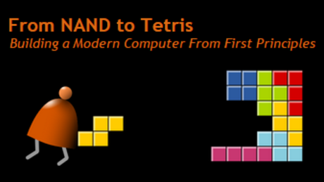

Low-level love with Nand2Tetris
Nicolas Noé / @niconoe

How does those machines work under the hood?
That's the MAGIC that bring me in IT!
As high-level coders, we are happy to stay far from that.
But understanding the layers of abstraction:
- Is fun!
- Gives loooooooot of technical depth
- And can finally make us better programmers!
But it's complex and intimidating!
I then discovered Nand2Tetris!
- A course, initially at Hebrew University of Israel...
- ... now available everywhere through a website and Coursera.
- In which we learn how to build from scratch a complete general-purpose computer, hardware and software.
- (Almost) no prerequisites!
- As simple as possible, but no stones left unturned.
- 2*6 weeks
God gives us the NAND gate!
In practice
- Each week, you get general theory and the specifications of the piece to build.
- Computer is simulated, using a very simple HDL
- Provided OSS tools: Hardware simulator, CPU simulator, test files, ...
Conclusion
- Super fun & enlightening
- Gave a lot of energy and confidence to look further
- Easier than expected!
http://nand2tetris.org @niconoe